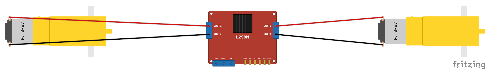
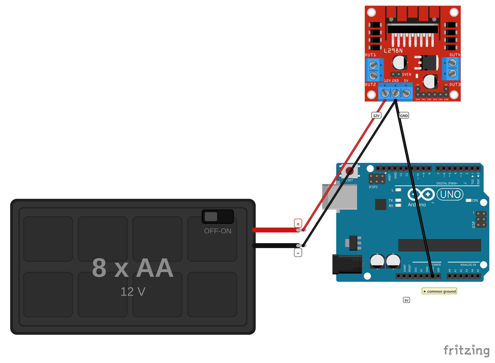
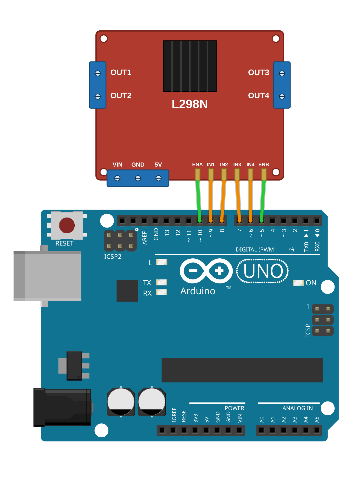
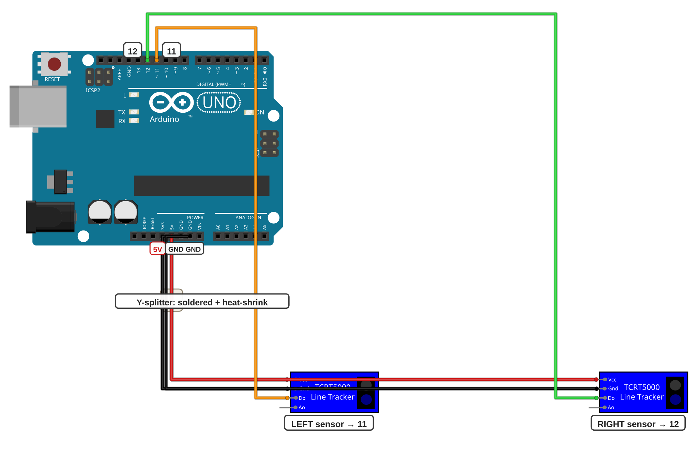
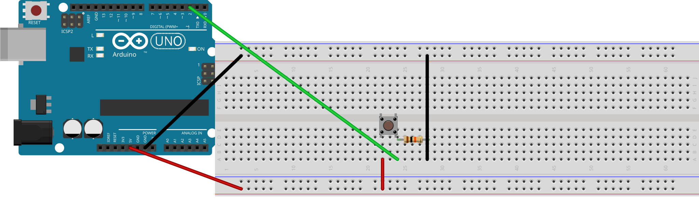

פרויקט 4 • מכונית עוקבת קו • כרטיסיית עזר לעמדת התלמיד
הכרטיסייה הזאת מראה איך מחברים את המנועים, את בקר המנועים L298N, את הסוללות ואת חיישני הקו בפרויקט 4. שומרים אותה ליד המכונית. אם מתבלבלים בחיווט, קודם מסתכלים על הכרטיסייה הזאת לפני שקוראים למורה.
יש כאן חמישה חיווטים. יחד הם כל החיווט של המכונית: המנועים אל הבקר, החשמל, שישה חוטי האות, חיישני הקו — והאחרון, כפתור לגרסה 3 בלבד. כל חמשת החיווטים מתקיימים יחד על אותה מכונית — כל תרשים מראה רק את החוטים החדשים שלו, והקודמים נשארים במקום.
GND של הבקר ל-GND של הארדואינו. בלעדיו שום דבר לא זז אחרי ההעלאה — בלי שום הודעת שגיאה. זה הפספוס מספר 1 בפרויקט הזה, ולכן בודקים אותו פעמיים.USB בפנים. לפני שמדליקים את המתג לנסיעה על סוללות — מנתקים קודם את כבל ה-USB. מתג דלוק + USB מחובר ביחד — אסור.OUT1–OUT4) — אף פעם לא ישירות לחיבורים של הארדואינו. החיבורים של הארדואינו הם לאותות בלבד; מנוע שמחובר אליהם ישירות עלול להזיק לארדואינו.| רכיב / אות | אל | מופיע ב- |
|---|---|---|
בקר — ENB · מהירות המנוע הימני |
חיבור דיגיטלי 5 |
חיווט 3 |
בקר — IN4 · כיוון המנוע הימני |
חיבור דיגיטלי 6 |
חיווט 3 |
בקר — IN3 · כיוון המנוע הימני |
חיבור דיגיטלי 7 |
חיווט 3 |
בקר — IN2 · כיוון המנוע השמאלי |
חיבור דיגיטלי 8 |
חיווט 3 |
בקר — IN1 · כיוון המנוע השמאלי |
חיבור דיגיטלי 9 |
חיווט 3 |
בקר — ENA · מהירות המנוע השמאלי |
חיבור דיגיטלי 10 |
חיווט 3 |
חיישן קו שמאלי — OUT |
חיבור דיגיטלי 11 |
חיווט 4 |
חיישן קו ימני — OUT |
חיבור דיגיטלי 12 |
חיווט 4 |
| כפתור התחלה/עצירה — גרסה 3 בלבד | חיבור דיגיטלי 2 |
חיווט 5 |
שני החוטים המולחמים של המנוע השמאלי נכנסים להדקי OUT1 ו-OUT2, ושני החוטים של המנוע הימני להדקי OUT3 ו-OUT4. בכל הדק: משחררים מעט את הבורג, מכניסים את קצה החוט, מהדקים בחזרה — ובודקים במשיכה עדינה שהחוט מחזיק.
איזה חוט לאיזה חור בתוך הזוג? לא משנה בשלב החיווט. אם מנוע מסתובב הפוך בבדיקה הראשונה — מחליפים בין שני החוטים שלו בהדקים. תיקון של 30 שניות, לא תקלה.
Motors L298N left motor ─────── OUT1 / OUT2 right motor ─────── OUT3 / OUT4

המנועים אל הבקר: חוטי המנוע השמאלי אל OUT1/OUT2, וחוטי המנוע הימני אל OUT3/OUT4. איזה חוט לאיזה חור בתוך הזוג — לא משנה בשלב הזה.
המתג של מחזיק הסוללות נשאר כבוי כל זמן שמחווטים. החוט האדום (+) של מחזיק הסוללות נכנס להדק VIN של הבקר (מסומן לפעמים 12V), והחוט השחור (−) להדק GND.
חוט ההארקה המשותפת: חוט בין GND של הבקר ל-GND של הארדואינו. זה החוט שהכי קל לשכוח — בלעדיו שום דבר לא זז. אפשר להעביר אותו דרך המסילה הכחולה (−) של הברדבורד.
הברדבורד הוא תחנת החשמל של המכונית: חוט מחיבור 5V של הארדואינו אל המסילה האדומה (+), וחוט מ-GND של הארדואינו אל המסילה הכחולה (−). לארדואינו יש רק חיבור 5V אחד — המסילות מפצלות אותו לשני החיישנים.
לנסיעה בלי כבל: חוט מהדק 5V של הבקר אל חיבור 5V של הארדואינו (הג׳אמפר שעל הבקר במקומו) — וכשנוסעים על סוללות, מנתקים קודם את כבל ה-USB.
Battery (+) red ───── L298N VIN (12V) Battery (−) black ─── L298N GND L298N GND ─────────── Arduino GND ★ common ground! Arduino Breadboard 5V ─────────────── (+) rail GND ─────────────── (−) rail Battery driving (no USB): L298N 5V ────────── Arduino 5V (jumper in place, USB unplugged)

חשמל והארקה משותפת: מחזיק הסוללות אל VIN ו-GND של הבקר; חיבור 5V אל המסילה האדומה (+) ו-GND אל הכחולה (−). החוט השחור העבה הוא ★ ההארקה המשותפת — GND של הבקר אל GND של הארדואינו.
שישה חוטים משורת החיבורים שעל הבקר אל החיבורים של הארדואינו, אחד-אחד לפי הסדר. נוח לבדוק: ששת החיבורים בארדואינו הם רצף אחד — 5 עד 10.
L298N Arduino ENB ─────────────── pin 5 right motor speed IN4 ─────────────── pin 6 right motor direction IN3 ─────────────── pin 7 right motor direction IN2 ─────────────── pin 8 left motor direction IN1 ─────────────── pin 9 left motor direction ENA ─────────────── pin 10 left motor speed

שישה חוטי האות: משורת החיבורים של הבקר אל חיבורים 5 עד 10 של הארדואינו, חוט לכל חיבור, לפי הטבלה למעלה. חוטי המהירות (ENA, ENB) ירוקים; חוטי הכיוון (IN1–IN4) כתומים.
שני חיישני הקו מותקנים בקדמת המכונית, פונים אל הרצפה, בגובה של בערך 1 ס״מ מעליה. שמאל וימין — לפי כיוון הנסיעה של המכונית.
כל חיישן מקבל חשמל מהמסילות: VCC אל המסילה האדומה (+), GND אל המסילה הכחולה (−). ה-OUT של החיישן השמאלי הולך אל חיבור דיגיטלי 11, וה-OUT של החיישן הימני אל חיבור דיגיטלי 12.
IR sensor LEFT IR sensor RIGHT VCC ── (+) rail VCC ── (+) rail GND ── (−) rail GND ── (−) rail OUT ── pin 11 OUT ── pin 12

חיישני הקו: כל חיישן — VCC אל המסילה האדומה (+) ו-GND אל הכחולה (−); OUT של החיישן השמאלי אל חיבור דיגיטלי 11 (כתום) ושל הימני אל חיבור דיגיטלי 12 (ירוק).
נחוץ רק למי שבוחרים בגרסה 3 להוסיף כפתור התחלה/עצירה. זה בדיוק חיווט הכפתור מהפרויקטים הקודמים: הכפתור לרוחב החריץ המרכזי של הברדבורד, רגל A אל המסילה האדומה (+), רגל B אל חיבור דיגיטלי 2 של הארדואינו — ומאותו טור גם נגד הורדה של 10 קילו-אוהם (פסי צבע: חום · שחור · כתום) אל המסילה הכחולה (−).
Button leg A ──────── (+) rail (5V)
Button leg B ──┬───── Arduino pin 2
└──[10 kΩ]── (−) rail (GND)
נגד ההורדה הולך בין חיבור דיגיטלי 2 לבין GND — לא בין 5V לבין GND. אם מחווטים אותו בין 5V לבין GND, לחיצה על הכפתור יוצרת קצר והארדואינו יתאפס.

כפתור התחלה/עצירה (גרסה 3 בלבד): רגל A אל המסילה האדומה (+), רגל B אל חיבור דיגיטלי 2 — ומאותו טור נגד הורדה של 10 קילו-אוהם אל המסילה הכחולה (−).